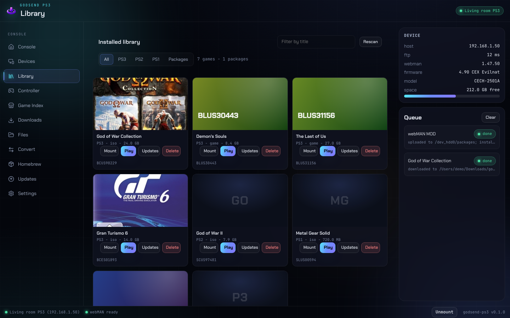
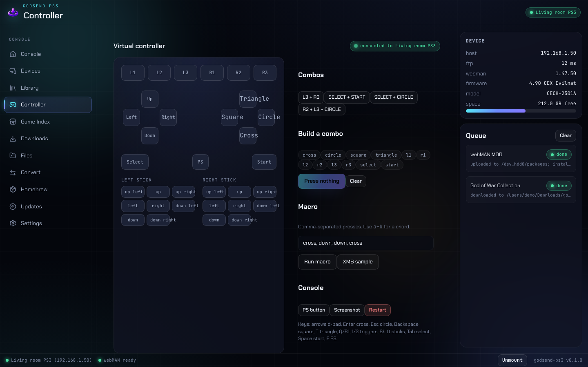
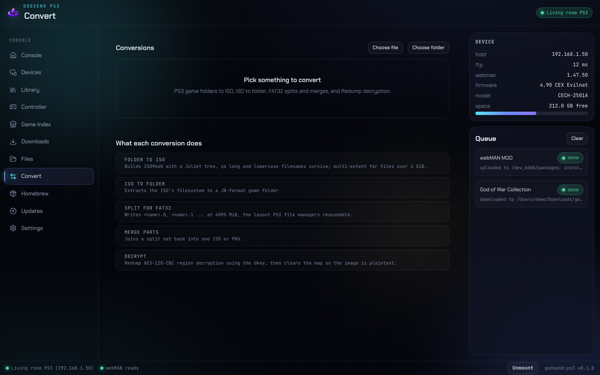
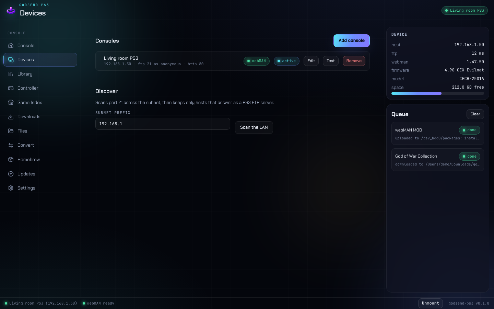
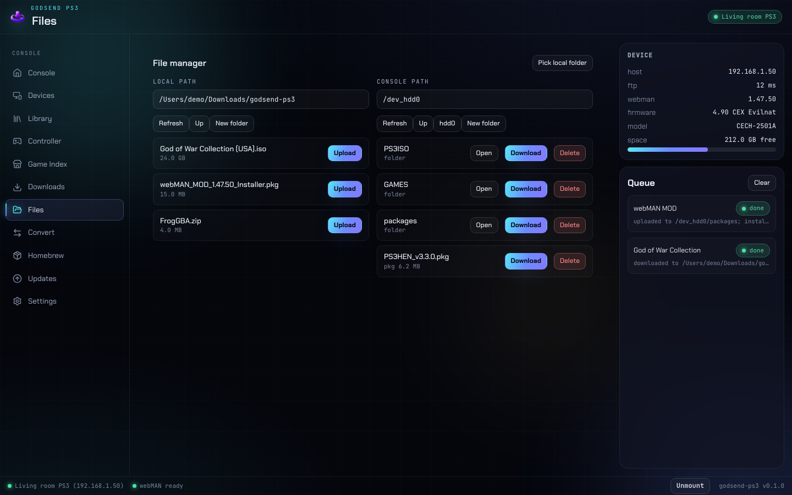
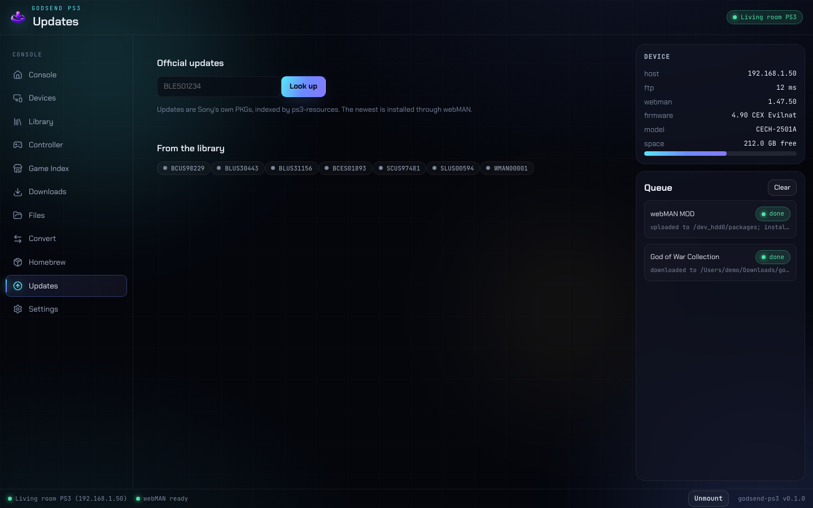

Console control
Probe FTP and webMAN, read firmware, CFW name, model and HDD space, then unmount, refresh, screenshot, notify, restart or power off.
Connect over FTP, see the installed library, drive the console with a virtual controller, download games and homebrew, convert images, and install everything back.






Desktop builds for macOS, Windows and Linux. The CLI archive also carries the MCP server.
| Build | Download | Size |
|---|---|---|
| Loading the latest builds... | ||
Builds are hosted on Cloudflare R2. Builds are not notarized: right click the app, Open, then Open again on first launch.
The parts of managing a CFW PS3 that usually need three tools and a file manager.
Probe FTP and webMAN, read firmware, CFW name, model and HDD space, then unmount, refresh, screenshot, notify, restart or power off.
Digital games, JB folders, PS3/PS2/PS1/PSP ISOs and packages. PARAM.SFO titles, ICON0 art, mount and launch, delete with confirmation.
A real on-screen pad over webMAN: press and hold, keyboard mapping, combos, macros and analog directions.
Game index and Internet Archive search, PS3 homebrew from GitHub releases, aria2c when installed, a cancellable job queue.
PKG to packages and straight into webMAN install, ISOs to their system folder, folders to GAMES, ZIP unpacking, FAT32 splitting on USB.
Folder to ISO with Joliet and multi-extent, ISO to folder, split and merge, Redump dkey decryption with automatic key lookup.
Official PSN packages by title id from ps3-resources, newest first, installed through webMAN.
Two panes, local and console, with upload, download, folders and delete, all reporting into the job queue.
Let an agent drive the console with the same tools you use.
While GODsend PS3 is open it serves the Model Context Protocol on loopback
(default http://127.0.0.1:8743/mcp). Tools cover status,
library, mount, install, pad presses, system actions, files, conversions,
search, homebrew and updates.
claude mcp add --transport http godsend-ps3 http://127.0.0.1:8743/mcp
There is also a stdio binary for clients that spawn their own server: godsend-ps3-mcp.
cargo test --workspace npm --prefix app install npm --prefix app run build npm --prefix app run tauri build
The CLI: cargo build --release -p godsend-ps3-cli, then godsend-ps3 --help.
| Need | Why |
|---|---|
| CFW or HEN PS3 with FTP | Every file operation. webMAN MOD includes an FTP server. |
| webMAN MOD on port 80 | Mounting, the virtual pad and system actions. FTP-only work still runs without it. |
| aria2c (optional) | 16-connection downloads; without it downloads use one connection. |
| Real-Debrid or TorBox keys (optional) | Resolve debrid links. Internet Archive needs neither. |
| GameSearch backend (optional) | Link resolution for the game index. Browsing works against the public site. |